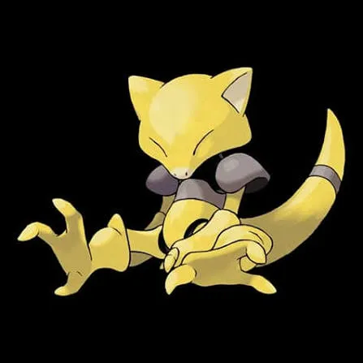
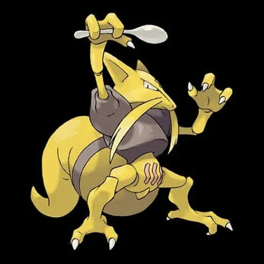
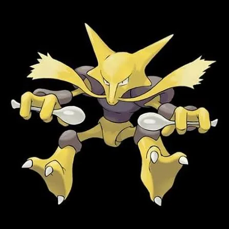
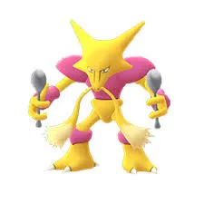
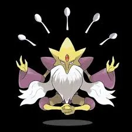
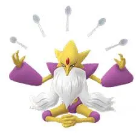

🧠 Mega Alakazam – Raid Boss Overview
⚔️ What is Mega Alakazam?
Mega Alakazam is a Mega Raid Boss in Pokémon GO. This means:
- It appears in Mega Raids
- You battle it with other players
- After defeating it, you:
- Earn Mega Energy
- Catch Alakazam
🎯 1. Why Mega Alakazam Matters
🔥 A. Top Psychic-Type Attacker
Mega Alakazam is one of the highest DPS Psychic-type Pokémon in the game. Useful for:
- Fighting-type raids
- Poison-type raids
🧬 B. Powerful Mega Boost
When Mega Evolved, it:
- Boosts Psychic-type attacks for all players
- Increases team damage output
🚀 C. Faster Raid Efficiency
Because of its glass cannon nature:
- Deals huge damage quickly
- Helps finish raids faster
🎁 D. Mega Energy Farming
- Raiding it gives Mega Energy for: Alakazam
🧠 E. Skill-Based Gameplay
- Requires dodging
- Needs good counters
- Rewards strategy
⚔️ 2. Difficulty Level
🔥 Overall Difficulty: Medium → Hard
📊 Difficulty Breakdown
| Factor | Level |
|---|---|
| Attack Power | 🔥 Very High |
| Bulk | ❌ Low |
| Moveset Threat | 🔥 High |
| Counter Availability | 👍 Good |
| Coordination Needed | Medium |
⚠️ Why It Can Be Difficult
🔴 High Damage Output
- Moves like Future Sight and Shadow Ball hit very hard
🔴 Fragile Counters
- Best counters (Ghost-types) faint quickly
🔴 Weather Boost Risk
- Windy weather makes it significantly stronger
🟢 Why It’s Manageable
✅ Clear Weaknesses
- Weak to:
- Dark
- Ghost
- Bug
✅ Strong Counters Available
- Many accessible Pokémon can defeat it
✅ Easier in Groups
- 3–5 players make it much easier
👥 Difficulty by Group Size
| Players | Difficulty |
|---|---|
| Solo | ❌ Impossible |
| Duo | 🔥 Very Hard |
| Trio | ⚠️ Hard |
| 4-5 | 👍 Easy |
🧾 Final Summary
| Category | Verdict |
|---|---|
| What It Is | Mega Raid Boss |
| Importance | ⭐⭐⭐⭐⭐ |
| Difficulty | ⭐⭐⭐⭐ |
| Best For | PvE / Raids |
🧠 Final Insight
Mega Alakazam is:
- A high-value raid boss because of its:
- Powerful Mega boost
- Top-tier damage
- A challenging fight because of its:
- Extreme attack power
- Fragile but fast-paced battle style
🧠 Mega Alakazam Moves Guide
⚡ 1. Fast Moves
Fast Moves generate energy and define how quickly Mega Alakazam can fire Charged Moves.
🔹 Fast Moves Explanation
- Confusion:
- High damage, slower energy gain
- Best for PvE (raids & gyms) due to strong Psychic-type damage
- Psycho Cut:
- Very fast energy generation, low damage
- Best for PvP or charged-move spam builds
📊 Fast Moves Table
| Move Name | Type | Damage | Energy Gain | DPS | EPS | Notes |
|---|---|---|---|---|---|---|
| Psycho Cut | Psychic | Low | High | Low | High | PvP / Fast Charging |
| Confusion | Psychic | High | Medium | High | Medium | PvE (Raids, Gyms) |
💥 2. Charged Moves
Charged Moves are the main damage dealers.
🔹 Charged Moves Explanation
- Focus Blast:
- Fighting-type coverage
- Coverage vs Rock-types
- Shadow Ball:
- Coverage vs Ghost-types
- Strong neutral damage
- Fire Punch:
- Fire-type coverage
- Coverage vs Grass-types
- Future Sight:
- Highest DPS Psychic move
- Best for raids (top choice)
📊 Charged Moves Table
| Move Name | Type | Damage | Energy Gain | DPS | Best Use |
|---|---|---|---|---|---|
| Focus Blast | Fighting | Very High | Medium | 🔥 Very High | Best overall use |
| Shadow Ball | Ghost | High | Medium | Excellent | Coverage |
| Fire Punch | Fire | Low | High | Moderate | Dangerous vs Grass counters |
| Future Sight | Psychic | Very High | High | Excellent | Best PvE |
🌟 3. Elite Moves
Mega Alakazam currently require Elite TMs for its best moves.
🔹 Elite Moves Explanation
- Counter:
- Fighting-type coverage
- Coverage vs Rock-types
- Psychic:
- Balanced move, reliable damage
- Has chance to lower opponent’s defense
- Dazzling Gleam:
- Fairy-type coverage
- Useful vs Dark-types
📊 Elite Moves Table
| Move Name | Type | Damage | Energy Gain | DPS | Best Use |
|---|---|---|---|---|---|
| Counter | Fighting | Low | Moderate | Good | General use |
| Psychic | Psychic | Medium | Medium | Good | General use |
| Dazzling Gleam | Fairy | High | High | Good | Anti-Dark |
👊 4. Raid Boss Moves
When Mega Alakazam appears as a raid boss, it can use a mix of these moves.
📊 Raid Boss Moves Table
| Move Type | Move | Type | Threat Level |
|---|---|---|---|
| Fast Move | Confusion | Psychic | High |
| Fast Move | Psycho Cut | Psychic | Medium |
| Charged | Future Sight | Psychic | 🔥 Very High |
| Charged | Psychic | Psychic | High |
| Charged | Shadow Ball | Ghost | 🔥 Very High |
| Charged | Dazzling Gleam | Fairy | Medium |
⚠️ 5. Dangerous Moves (Must Dodge)
These moves make Mega Alakazam much harder to defeat in raids.
🔥 Most Dangerous Moves
- Future Sight:
- Massive burst damage
- Can wipe out fragile counters quickly
- Shadow Ball:
- Extremely dangerous vs Psychic counters (mirror match risk)
- Confusion:
- High fast-move pressure
📊 Dangerous Moves Table
| Move | Why Dangerous |
|---|---|
| Future Sight | Huge damage, hard to dodge |
| Shadow Ball | Strong coverage vs Psychic/Ghost |
| Confusion | High DPS fast move |
| Psychic | Consistent heavy damage |
🧠 Pro Insight
- Best Moveset (PvE Attacker) 👉 Confusion + Future Sight
- Best Moveset (Flexible / Coverage) 👉 Psycho Cut + Shadow Ball
- Mega Alakazam is a glass cannon: Extremely high damage Very low bulk
🧠 Mega Alakazam Performance Guide
⚔️ 1. PvP (Player vs Player)
🔹 Overall PvP Role
Mega Alakazam is NOT allowed in standard PvP leagues (like Great, Ultra, Master League). Megas are restricted to special events only.
🔹 If Allowed (Special Cups / Mega Cups)
- Acts as a glass cannon nuker
- Relies on:
- Fast energy gain (Psycho Cut)
- Strong nukes (Shadow Ball / Future Sight)
✅ Strengths
- Extremely fast charged moves
- High burst damage
- Strong against:
- Fighting-types
- Poison-types
❌ Weaknesses
- Very low bulk (faints quickly)
- Weak to:
- Dark, Ghost, Bug
- Can be easily countered by tanks
📊 PvP Summary Table
| Category | Rating |
|---|---|
| Damage Output | ⭐⭐⭐⭐⭐ |
| Bulk | ⭐ |
| Energy Gain | ⭐⭐⭐⭐⭐ |
| Consistency | ⭐⭐ |
| Overall Viability | ⭐⭐ (Limited Use) |
🛡️ 2. PvE
🔹 Role in PvE
Mega Alakazam is one of the top Psychic-type attackers in the game.
✅ Best Uses
- Fighting-type raid bosses
- Poison-type raid bosses
- General high DPS situations
🔥 Best Moveset
- Confusion + Future Sight
⚡ Why It’s Strong
- Massive DPS output
- Boosts other Psychic-type Pokémon in raids (Mega bonus)
❌ Downsides
- Very fragile → faints quickly
- Requires dodging for efficiency
📊 PvE Summary Table
| Category | Rating |
|---|---|
| DPS | ⭐⭐⭐⭐⭐ |
| Bulk | ⭐ |
| Utility (Mega Boost) | ⭐⭐⭐⭐⭐ |
| Ease of Use | ⭐⭐⭐ |
| Overall | ⭐⭐⭐⭐ |
🧬 3. Raids (As Attacker + Mega Support)
🔹 As a Raid Attacker
Mega Alakazam is a top-tier Psychic Mega.
✅ Key Advantages
- Boosts:
- Psychic-type damage
- Helps team deal more damage overall
- Great vs:
🔹 As a Raid Boss (Facing It)
- Difficult due to:
- High damage output
- Dangerous moves like Shadow Ball
📊 Raid Performance Table
| Role | Rating |
|---|---|
| Attacker | ⭐⭐⭐⭐⭐ |
| Team Support | ⭐⭐⭐⭐⭐ |
| Survivability | ⭐ |
| Difficulty (Boss) | ⭐⭐⭐⭐ |
🏟️ 4. Gyms (Attack & Defense)
🔹 Gym Attacking
- Very strong due to high DPS
- Quickly defeats defenders
🔹 Gym Defense
- ❌ Not recommended
Why?
- Low HP and defense
- Gets knocked out easily
📊 Gym Summary Table
| Role | Rating |
|---|---|
| Attacking | ⭐⭐⭐⭐ |
| Defending | ⭐ |
🧪 5. Performance in Various Cups
🔹 Great League (1500 CP)
- ❌ Not usable (Mega restriction + too fragile)
🔹 Ultra League (2500 CP)
- ❌ Not viable
🔹 Master League
- ❌ Outclassed by bulkier Psychic-types
Special Cups (if Megas allowed)
- Situational glass cannon
- Works best with:
- Shield advantage
- Energy lead
📊 Cup Viability Table
| Cup Type | Viability |
|---|---|
| Great League | ❌ Not Allowed |
| Ultra League | ❌ Not Allowed |
| Master League | ❌ Weak |
| Mega Cups | ⭐⭐⭐ (Situational) |
🧠 Strategy Insights
🔥 When to Use Mega Alakazam
- When you want maximum DPS
- When your team benefits from Psychic Mega boost
⚠️ When NOT to Use
- Long fights without dodging
- PvP formats (most cases)
🧩 Comparison Insight
Compared to other Psychic Megas:
- More DPS than many options
- Less bulk than alternatives like:
💡 Final Verdict
| Mode | Verdict |
|---|---|
| PvP | ❌ Limited |
| PvE | ✅ Excellent |
| Raids | 🔥 Top Tier |
| Gyms | ⚖️ Attacker Only |
| Cups | ⚠️ Situational |
🧠 Mega Alakazam Raid Strategy Guide
⚠️ First — Can You Solo Mega Alakazam?
👉 No, solo is NOT realistically possible
🔍 Why?
- Mega raids have very high HP
- Mega Alakazam has:
- Extremely high attack
- Dangerous charged moves (Future Sight, Shadow Ball)
🧾 Solo Feasibility Table
| Factor | Result |
|---|---|
| Solo Possible? | ❌ No |
| Minimum Players | ✅ 2 (high-level) |
| Safe Group Size | ✅ 3–5 players |
👥 2. Duo Strategy (2 Players)
⚔🎯 Difficulty: VERY HARD
🔹 Requirements
- Level 40+ trainers
- Top-tier counters
- Weather boost advantage (Fog or Windy)
🔥 Best Approach
- Use Dark / Ghost / Bug types
- Coordinate Mega boosts (Mega Gengar, Mega Tyranitar)
⚡ Key Tips
- Dodge Future Sight
- Avoid Psychic-type counters if boss has Shadow Ball
- Revive quickly and rejoin
📊 Duo Strategy Table
| Aspect | Strategy |
|---|---|
| Difficulty | 🔥🔥🔥🔥🔥 |
| Coordination | High |
| Revives Needed | High |
| Success Rate | Medium |
👥👥 Trio Strategy (3 Players)
🎯 Difficulty: HARD but reliable
🔹 Requirements
- Level 30–40 trainers
- Good counters
🔥 Best Approach
- Balanced team:
- 1 Mega Pokémon (boost)
- 2 strong attackers
⚡ Key Tips
- Less dodging needed compared to duo
- Focus on consistent DPS
- Rejoin quickly after fainting
📊 Trio Strategy Table
| Aspect | Strategy |
|---|---|
| Difficulty | 🔥🔥🔥🔥 |
| Coordination | Medium |
| Revives Needed | Medium |
| Success Rate | High |
👥👥👥 Group Strategy (4–6 Players)
🎯 Difficulty: EASY
🔹 Requirements
- Casual players can win easily
🔥 Best Approach
- Use any strong counters
- Mega boost still helpful but not required
⚡ Key Tips
- No need for perfect teams
- Focus on staying in battle
📊 Group Strategy Table
| Aspect | Strategy |
|---|---|
| Difficulty | 🔥🔥 |
| Coordination | Low |
| Revives Needed | Low |
| Success Rate | Very High |
🟢 Beginner Strategy
🎯 Goal: Just win the raid
✅ What to Do
- Join groups (3+ players)
- Use recommended battle team
- Focus on rejoining quickly
❌ Avoid
- Solo/duo attempts
- Overthinking counters
📊 Beginner Table
| Focus Area | Tip |
|---|---|
| Team | Auto-selected team is OK |
| Strategy | Tap & rejoin |
| Difficulty | Easy with group |
🟡 Intermediate Strategy
🎯 Goal: Improve efficiency
✅ What to Do
- Use proper counters:
- Dark, Ghost, Bug types
- Learn boss moves
- Start dodging big attacks
⚡ Key Skill
- Recognizing Future Sight timing
📊 Intermediate Table
| Focus Area | Tip |
|---|---|
| Team | Type-based counters |
| Strategy | Light dodging |
| Efficiency | Medium |
🔵 Advanced Strategy
🎯 Goal: Minimize resources & time
✅ What to Do
- Build optimized teams
- Use Mega evolution strategically
- Dodge charged moves consistently
🔥 Advanced Tricks
- Pre-lobby coordination
- Move-set prediction
📊 Advanced Table
| Focus Area | Tip |
|---|---|
| Team | Max DPS counters |
| Strategy | Dodge + timing |
| Efficiency | High |
🔴 Expert Strategy
🎯 Goal: Speed runs / duo clears
✅ What to Do
- Perfect counters (Level 40–50)
- Weather boost optimization
- Frame-perfect dodging
🔥 Expert Techniques
- Relobby optimization
- Move counting
- Avoiding faint chains
⚡ Critical Focus
- Countering specific moves:
- Shadow Ball → avoid Psychic counters
- Future Sight → dodge timing
📊 Expert Table
| Focus Area | Tip |
|---|---|
| Team | Best-in-slot counters |
| Strategy | Perfect execution |
| Efficiency | Maximum |
⚠️ Universal Strategy Tips
🔥 Always Do This
- Use Dark / Ghost attackers
- Watch boss moveset before committing
- Rejoin quickly after fainting
🚫 Avoid This
- Using Psychic-types vs Shadow Ball
- Ignoring dodging in small groups
- Underestimating its damage
🧠 Final Strategy Summary
| Scenario | Best Approach |
|---|---|
| Solo | ❌ Impossible |
| Duo | 🔥 Expert Only |
| Trio | ✅ Recommended |
| 4+ Players | 👍 Easy Win |
⚔🧠 Mega Alakazam Counters Guide
⚔️ 1. Type Weakness (Core Strategy)
Mega Alakazam is a Psychic-type Pokémon, so it is weak against:
🔥 Super Effective Types
- Ghost-type
- Dark-type
- Bug-type
❌ Avoid Using
- Psychic
- Fighting
- Poison
📊 Type Effectiveness Table
| Type | Effectiveness | Strategy |
|---|---|---|
| Dark | ✅ Super Effective | BEST choice (high survivability + damage) |
| Ghost | ✅ Super Effective | High DPS but fragile |
| Bug | ✅ Super Effective | Situational but useful |
| Psychic | ❌ Not effective | Avoid |
| Fighting | ❌ Weak | Avoid |
| Poison | ❌ Weak | Avoid |
🏆 Best Counters (Top Tier)
These are the absolute strongest Pokémon to use.
🔥 Best Counters List
📊 Best Counters Table
| Pokémon | Type | Best Moveset |
|---|---|---|
| Mega Tyranitar | Dark/Rock | Bite + Brutal Swing |
| Mega Gengar | Ghost/Poison | Lick + Shadow Ball |
| Shadow Tyranitar | Dark/Rock | Bite + Brutal Swing |
| Hydreigon | Dark/Dragon | Bite + Brutal Swing |
| Darkrai | Dark | Snarl + Shadow Ball |
| Chandelure | Fire/Ghost | Hex + Shadow Ball |
⚡ Top Counters
These are slightly easier to obtain but still very effective.
🔹 Top Counters List
📊 Top Counters Table
🧬 Counters by Type Strategy
🌑 Dark-Type Counters
Why Dark is Best:
- Resists Psychic moves
- High survivability
- Strong consistent DPS
✅ Recommended
📊 Dark Strategy Table
| Advantage | Impact |
|---|---|
| Resists Psychic | Stay longer in battle |
| High DPS | Faster clears |
| Safe Choice | Works in all movesets |
👻 Ghost-Type Counters
Why Use Ghost:
- Massive damage output
- Best for speed runs
⚠️ Risk:
- Fragile
- Weak to Shadow Ball
✅ Recommended
📊 Ghost Strategy Table
| Advantage | Risk |
|---|---|
| Very high DPS | Low bulk |
| Fast clears | Faints quickly |
🐞 Bug-Type Counters
Why Use Bug:
- Super effective
- Good backup option
⚠❌ Downsides:
- Lower DPS compared to Dark/Ghost
✅ Recommended
📊 Bug Strategy Table
| Advantage | Limitation |
|---|---|
| Super effective | Lower DPS |
| Easy availability | Not top tier |
⚠️ Counter Strategy vs Movesets
🔥 If Mega Alakazam Has Future Sight
- Use Dark-types
🔥 If It Has Shadow Ball
- Avoid Ghost-types
- Use Dark-types instead
🔥 If It Has Dazzling Gleam
- Avoid Dark-types slightly (takes neutral damage)
🧠 Team Building Strategy
🔹 Ideal Raid Team
- 1 Mega Pokémon (boost)
- 5 Dark/Ghost attackers
🔥 Example Team
🧾 Final Counter Summary
💡 Pro Tips
- Always check moveset before raid
- Prefer Dark-types for consistency
- Use Mega boost for team damage
✨ Shiny Comparison – Mega Alakazam
🎨 Normal vs Shiny Appearance
Regular Mega Alakazam
- Color: Brown / Yellow tones
- Classic Psychic look
- Standard appearance
Shiny Mega Alakazam
- Color: Pink / Magenta tones
- Much brighter and more vibrant
- More visually striking
📊 Visual Comparison Table
| Feature | Normal | Shiny |
|---|---|---|
| Body Color | Brown / Yellow | v |
| Visual Impact | Standard | Eye-catching |
| Rarity | Common | Rare |
🌟 3. Shiny Rate in Raids
Mega Raid Shiny Odds: Approx: 1 in 64 (~1.6%)
🏆 4. Is Shiny Mega Alakazam Worth It?
✅ YES
🔥 A. Visual Value
- One of the most noticeable shiny Psychic-types
🧬 B. Same Performance
- Shiny = same stats as normal
🎯 C. Collection Value
- Great for:
- Shiny collectors
- Showcasing Mega Pokémon
🎯 5. Best Strategy to Get Shiny
Tips:
- Do multiple raids
- Use raid groups for faster clears
- Prioritize events featuring:
- Mega Alakazam
🧠 6. Pro Insight
Shiny Mega Alakazam is:
- Not about power
- But about rarity + visual appeal
🧾 Final Shiny Summary
| Category | Verdict |
|---|---|
| Availability | ✅ Yes |
| Catch Method | Via Alakazam |
| Shiny Rate | ~1/64 |
| Performance | Same as normal |
| Value | ⭐⭐⭐⭐⭐ |

Abra
Images are used for informational and educational purposes only. All rights belong to their respective owners.
Shiny Abra
Images are used for informational and educational purposes only. All rights belong to their respective owners.

Kadabra
Images are used for informational and educational purposes only. All rights belong to their respective owners.
Shiny Kadabra
Images are used for informational and educational purposes only. All rights belong to their respective owners.

Alakazam
Images are used for informational and educational purposes only. All rights belong to their respective owners.

Shiny Alakazam
Images are used for informational and educational purposes only. All rights belong to their respective owners.

Mega Alakazam
Images are used for informational and educational purposes only. All rights belong to their respective owners.

Shiny Mega Alakazam
Images are used for informational and educational purposes only. All rights belong to their respective owners.
🧬 Evolution & Buddy Distance – Mega Alakazam
1. Evolution Chain
To get Mega Alakazam, you must first evolve its base forms:
📊 Evolution Line
| Stage | Pokémon | Requirement |
|---|---|---|
| 1 | Abra | - |
| 2 | Kadabra | 25 Candy |
| 3 | Alakazam | 100 Candy |
| ⭐ | Mega Alakazam | Mega Evolution |
⚡ 2. Mega Evolution Process
How to Mega Evolve
You cannot evolve directly into Mega form permanently
📊 Mega Energy Cost
| Stage | Energy Cost |
|---|---|
| First Mega | 🔥 200 Energy |
| After Unlock | Reduced |
⏱️ 3. Mega Duration
- Standard Mega Evolution lasts: 8 hours
🚶 4. Buddy Distance
Candy Distance
| Pokémon | Distance per Candy |
|---|---|
| Alakazam | 3 km |
🎯 What This Means
- Walk 3 km → earn 1 candy
- Faster compared to rare Pokémon
🔥 Bonus After Mega Unlock
- Walking Alakazam as your buddy can also give:
- Mega Energy
🧠 5. Best Strategy for Evolution & Buddy
Step-by-Step Efficient Path
- Catch Abra
- Evolve → Kadabra
- Evolve → Alakazam
- Raid Mega Alakazam → collect Mega Energy
- Mega Evolve once
- Set as buddy → farm energy + candy
⚠️ 6. Common Mistakes
Not Mega Evolving Once
- You won’t unlock buddy Mega Energy farming
Ignoring Buddy System
- Slower progress
Wasting Candy on Low IV Pokémon
- Always evolve a good IV Alakazam
🧾 Final Summary
| Category | Value |
|---|---|
| Final Evolution | Alakazam → Mega Alakazam |
| Candy Needed | 125 total |
| Buddy Distance | 3 km |
| Mega Energy | 200 (first time) |
| Extra Benefit | Buddy gives Mega Energy |
🧠 Final Insight
Mega Alakazam is:
- Easy to evolve
- Efficient to maintain
⚔️ Best Mega Evolved Pokémon vs Mega Alakazam
🏆 1. Absolute Best Mega Counters
🌑 Mega Tyranitar
Why It’s #1:
- Dark-type → super effective damage
- Resists Psychic moves
- High bulk → survives longer
Best Moves
- Bite + Brutal Swing
👻 Mega Gengar
Why It’s Strong
- Extremely high DPS
- Ghost-type damage melts boss HP
Risk
- Very fragile
- Weak to Shadow Ball
⚡ 2. Other Strong Mega Options
🌑 Mega Houndoom
Strengths:
- Dark-type damage
- Boosts Dark-type teammates
🐞 Mega Beedrill
Strengths:
- Bug-type damage
- Easy to obtain
Weakness:
- Low bulk
👻 Mega Banette
Strengths:
- Ghost-type attacker
- Good DPS
📊 Mega Counter Comparison
| Mega Pokémon | Type | DPS | Bulk | Best Use |
|---|---|---|---|---|
| Mega Tyranitar | Dark/Rock | ⭐⭐⭐⭐⭐ | ⭐⭐⭐⭐ | Best overall |
| Mega Gengar | Ghost | ⭐⭐⭐⭐⭐ | ⭐ | Speed runs |
| Mega Houndoom | Dark/Fire | ⭐⭐⭐⭐ | ⭐⭐⭐ | Backup |
| Mega Banette | Ghost | ⭐⭐⭐⭐ | ⭐⭐ | Balanced |
| Mega Beedrill | Bug | ⭐⭐⭐ | ⭐ | Budget |
🧬 3. Mega Boost Strategy
Best Team Strategy
Option 1 (Safe Team)
- Use Mega Tyranitar
- Teammates use Dark-types
Option 2 (Aggressive Team)
- Use Mega Gengar
- Teammates use Ghost-types
⚠️ 4. Choosing Based on Boss Moves
🔴 If Mega Alakazam has Shadow Ball
Avoid Ghost Megas
Use:
🔴 If it has Dazzling Gleam
- Dark-types take neutral damage
- Still safe to use
🔴 If it has Future Sight
- Dark-types perform best
🧠 Final Strategy Insight
The best Mega depends on your goal:
- Safe & consistent → Mega Tyranitar
- Fastest clear → Mega Gengar
- Balanced option → Mega Houndoom / Banette
🧾 Final Summary
| Category | Best Choice |
|---|---|
| Overall Best | Mega Tyranitar |
| Highest DPS | Mega Gengar |
| Budget Option | Mega Beedrill |
| Safest Team | Dark-type Mega |
🍬 Candy Boost – Mega Alakazam
1. Which Pokémon Get Boosted?
Mega Alakazam is a Psychic-type Mega, so it boosts: Psychic-type Pokémon
Common Psychic-types
Strong / Meta Psychic-types
Raid Boss Psychic-types
🎯 2. How the Boost Works
Effects During Mega Evolution
| Bonus Type | Effect |
|---|---|
| Candy Bonus | +1 extra candy per catch |
| XL Candy Chance | Increased chance |
| Raid Candy Bonus/td> | Applies to raid catches too |
🧬 3. Best Situations to Use This Boost
🔥 A. Community Days
Example:
- Abra Community Day
🎯 B. Psychic-Type Events
Events featuring Psychic spawns
- Maximum efficiency
⚔️ C. Psychic Raid Bosses
Example:
⚠️ 4. Common Mistakes
Not Activating Mega Before Catching
- You must Mega Evolve before catching
Using Wrong Mega Type
- Only Psychic-type Pokémon benefit
Ignoring XL Candy Boost
- Very important for high-level players
🧠 5. Advanced Strategy Insight
Candy Farming Optimization
Best Combo:
- Mega Alakazam active
- Weather boost
- Pinap Berry
Long-Term Value
Using Mega Alakazam helps:
- Build strong Psychic teams faster
- Save resources
🧾 Final Candy Boost Summary
| Category | Benefit |
|---|---|
| Boost Type | Psychic |
| Extra Candy | ✅ Yes |
| XL Candy Boost | ✅ Yes |
| Best Use | Events + Raids |
🔴 Mega Alakazam Weakness Guide
🧠 1. Typing Overview
Mega Alakazam is a pure Psychic-type Pokémon, which makes its weaknesses very straightforward.
⚔️ 2. Main Weaknesses
Mega Alakazam is weak to:
- 🌑 Dark-type
- 👻 Ghost-type
- 🐞 Bug-type
📊 Weakness Table
| Type | Damage Taken | Effect |
|---|---|---|
| Dark | 🔥 Super Effective | Best counter type |
| Ghost | 🔥 Super Effective | High DPS option |
| Bug | 🔥 Super Effective | Backup option |
Why These Types Are Strong
Dark-Type
- Resists Psychic moves
- Deals super effective damage
Ghost-Type
- Deals very high damage
- Great for fast raid clears
Bug-Type
- Also super effective
- More accessible for some players
3. Moveset-Based Weakness Strategy
🔥 If It Uses Future Sight
- Use Dark-types
- Focus on survivability
👻 If It Uses Shadow Ball
- Avoid Ghost-types
- Use Dark-types instead
✨ If It Uses Dazzling Gleam
- Still use Dark-types
- Just be careful
🌦️ 4. Weather Impact on Weakness
🌫️ Fog Weather
- Boosts Dark & Ghost moves
- Makes weaknesses more effective
🌬️ Windy Weather
- Boosts Psychic moves
- Makes Mega Alakazam stronger
🧠 5. Strategic Insight
Why Exploiting Weakness is Critical
Mega Alakazam has:
- Extremely high attack
- Very low bulk
DPS vs Survival
| Type | Strength | Risk |
|---|---|---|
| Dark | Balanced | Low |
| Ghost | High DPS | High risk |
| Bug | Safe | Low DPS |
🧾 Final Weakness Summary
| Category | Details |
|---|---|
| Main Weaknesses | Dark, Ghost, Bug |
| Best Type | 🌑 Dark |
| High DPS Type | 👻 Ghost |
| Backup Option | 🐞 Bug |
🛡️ Mega Alakazam Resistance Guide
🧠 1. Typing Overview
Mega Alakazam is a pure Psychic-type Pokémon, which directly determines its:
- ✅ Resistances
- ❌ Weaknesses
🟢 2. Resistances
✅ Mega Alakazam Resists:
- Fighting-type moves
- Psychic-type moves
📊 Resistance Table
| Type | Damage Taken | Effect |
|---|---|---|
| Fighting | Reduced | Takes less damage |
| Psychic | Reduced | Takes less damage |
💡 Why These Resistances Matter
🥊 Fighting Resistance
- Makes Mega Alakazam strong against:
- Machamp-type raid bosses
- Takes reduced damage from Fighting attacks
🧠 Psychic Resistance
- Useful in mirror-type matchups
- Reduces damage from other Psychic Pokémon
🔴 3. What It Does NOT Resist
Mega Alakazam does not resist many types, which is why it is fragile.
❌ Neutral Damage From:
- Fire
- Water
- Electric
- Grass
- Normal
- Flying
- Fairy
⚠️ 4. Weakness Reminder
Even though this section is about resistance, you must understand:
🔥 Mega Alakazam is WEAK to:
- Dark
- Ghost
- Bug
⚔️ 5. Strategic Insight
Mega Alakazam still:
- Has very low defense
- Faints quickly anyway
Practical Battle Impact
| Scenario | Result |
|---|---|
| Against Fighting Pokémon | Performs well |
| Against Psychic Pokémon | Takes less damage |
| Against strong counters | Faints quickly |
🧬 6. Defensive Limitation Insight
Mega Alakazam has:
- Very few resistances
- Multiple strong weaknesses
This creates:
- High offensive value
- High offensive value
🧾 Final Resistance Summary
| Category | Details |
|---|---|
| Resistances | Fighting, Psychic |
| Weaknesses | Dark, Ghost, Bug |
| Bulk | ❌ Very Low |
| Defensive Value | ⭐⭐ |
🧠 Final Insight
Mega Alakazam is not meant to tank damage.
Its resistances are:
- Helpful in specific matchups
- But not enough to rely on defensively
You should always:
- Focus on offense + dodging
- Not on survivability
🧠 Conclusion – Mega Alakazam
Mega Alakazam stands out as one of the most powerful yet skill-dependent Mega Pokémon in Pokémon GO. It perfectly represents a glass cannon playstyle—delivering incredible damage while requiring careful handling.
Overall Performance Summary
- Attack Power: Among the highest in the game
- Bulk: Extremely low
- Raid Value: Top-tier Psychic attacker
- Mega Utility: Strong team-wide Psychic boost
Where Mega Alakazam Excels
Mega Alakazam is absolutely worth using when:
- You want maximum DPS in raids
- You are fighting
- Fighting-type bosses
- Poison-type bosses
- You play in coordinated raid groups
Where It Falls Short
Despite its strengths, Mega Alakazam has clear limitations:
- Very fragile → requires dodging
- Not useful in PvP formats
- Can struggle in long fights without coordination
🎯 Final Verdict
| Category | Rating |
|---|---|
| PvE / Raids | ⭐⭐⭐⭐⭐ |
| PvP | ⭐ |
| Ease of Use | ⭐⭐ |
| Overall Value | ⭐⭐⭐⭐☆ (High) |
🧠 Final Insight
Mega Alakazam isn’t just about raw strength—it’s about how effectively you use it.
- Beginners → use it in groups for easy wins
- Intermediate players → optimize counters and timing
- Advanced players → maximize DPS and team boosts
- Experts → use it for speed runs and high-efficiency raids
🎯 Mega Alakazam Catch CP Guide
📊 Catch CP Ranges
🟢 Normal Weather (Level 20)
| IV Quality | CP Range |
|---|---|
| 100% IV | 1667 CP |
| 0% IV | ~1584 CP |
🌬️ Windy Weather Boost (Level 25)
| IV Quality | CP Range |
|---|---|
| 100% IV | 2084 CP |
| 0% IV | ~1980 CP |
🏆 2. 100% IV CP Values
These are the most important numbers players look for:
| Condition | CP |
|---|---|
| Normal Weather | 1667 CP |
| Windy Weather | 2084 CP |
🌦️ 3. Weather Impact on Catch CP
🌬️ Windy Weather Boost
- Increases Pokémon level from 20 → 25
- Results in higher CP
📊 Comparison Table
| Condition | Level | Max CP |
|---|---|---|
| Normal | 20 | 1667 CP |
| Windy | 25 | 2084 CP |
🎯 4. CP vs IV Understanding
What CP Tells You:
- Higher CP = generally better IVs
- But not always exact
Quick IV Judgment
| CP Range | IV Quality |
|---|---|
| Near max CP | ⭐⭐⭐⭐⭐ |
| Mid range | ⭐⭐⭐ |
| Low range | ⭐ |
⚠️ 5. Common Mistakes with Catch CP
- ❌ Mistake 1: Ignoring Weather Boost - You might miss a 2084 CP hundo
- ❌ Mistake 2: Assuming High CP = Perfect IV - Always appraise after catching
- ❌ Mistake 3: Not Prioritizing High CP Targets - Use best berries for: Top CP encounters
🧠 6. Pro Catch Strategy Based on CP
🔥 If CP is Near Max
Use:
- Golden Razz Berry
- Curveball
- Excellent throw
- Full focus
🟡 If CP is Medium
Use:
- Silver Pinap Berry
🔴 If CP is Low
Use:
- Use Pinap Berry for extra candy
🧾 Final Catch CP Summary
| Category | Value |
|---|---|
| Max CP (Normal) | 1667 |
| Max CP (Windy) | 2084 |
| Best Condition | Windy Weather |
| Importance | 🔥 Very High |
🌦️ Weather Boost – Mega Alakazam
☀️ 1. Which Weather Boosts Mega Alakazam?
Windy Weather: This is the only weather that boosts Mega Alakazam
📊 Weather Boost Table
| Weather | Effect on Mega Alakazam |
|---|---|
| Windy | Boosts Psychic moves |
| Fog | No boost |
| Sunny | No effect |
| Rainy | No effect |
🔥 2. What Happens When It’s Weather Boosted?
⚡ Boost Effects
When weather is Windy:
- Mega Alakazam’s CP increases
- Its Psychic moves deal more damage
- Raid becomes harder
💥 Impact in Raid
| Factor | Normal | Windy Boost |
|---|---|---|
| Boss Damage | High | Very High |
| Difficulty | Medium | Hard |
| Time to defeat | Normal | Longer |
⚠️ 3. Why Windy Weather is Dangerous
🔴 Major Problem
Mega Alakazam already has:
- High attack
- Strong moves like Future Sight
Windy weather makes it:
- Hit extremely hard
- Knock out counters faster
🛡️ 4. Counter Strategy in Weather
🌬️ If Weather is Windy
✅ What to Do
- Use tanky Dark-types
- Dodge charged moves
- Bring more players
❌ Avoid
- Fragile Ghost-types
🌫️ If Weather is Fog
🔥 Why Fog is BEST
- Boosts Dark & Ghost counters
- Makes raid easier
Makes raid easier
🎯 5. Catch Boost
🌬️ Windy Weather Bonus
When boosted:
- Encountered Alakazam is:
- Higher level
- Stronger after catching
📊 Catch Benefit Table
| Condition | Level |
|---|---|
| Normal | Level 20 |
| Windy | Level 25 |
🧠 6. Pro Weather Strategy
🟢 Best Time to Raid
- Fog weather → easiest raids
🔴 Avoid
- Windy weather → harder battles
🔥 Advanced Tip
- Expert players prefer Windy weather for higher-level catches
⚖️ 7. Risk vs Reward
| Weather | Difficulty | Reward |
|---|---|---|
| Windy | High | ⭐⭐⭐⭐⭐ |
| Fog | Easy | ⭐⭐⭐⭐ |
| Others | Normal | ⭐⭐⭐ |
🧾 Final Weather Insight
- Windy weather = harder raid + better rewards
- Fog weather = easier raid + faster completion
🧠 Is Mega Alakazam Worth Raiding?
🏆 1. Why It IS Worth Raiding
🔥 Top-Tier Psychic Attacker
Mega Alakazam has:
- Extremely high Attack stat
- One of the highest Psychic-type DPS in the game
👉 Perfect for:
- Fighting-type raid bosses
- Poison-type raid bosses
⚡ Powerful Mega Boost
When Mega Evolved, it:
- Boosts Psychic-type damage for your whole team
- Helps raids finish faster
🚀 Fast Raid Clears
Because of its glass cannon nature:
- Battles are faster
- Great for:
- Speed runs
- Efficient farming
🧬 Mega Energy Farming
Raiding it gives:
- Mega Energy → needed to evolve Alakazam
👉 Important if you want to:
- Unlock Mega evolution
- Use it repeatedly at lower cost
⚠️ 2. Why It May NOT Be Worth It
❌ Very Fragile
- Faints extremely fast
- Needs:
- Dodging
- Relobby management
❌ Limited Use in PvP
- Megas are mostly restricted in PvP
- Even if allowed:
- Too fragile to perform well
❌ Outclassed in Some Situations
- Compared to bulkier Megas like: Mega Slowbro
❌ Needs Team Coordination
- Works best in:
- Organized raid groups
- Less effective in:
- Random casual lobbies
🎯 Who SHOULD Raid Mega Alakazam?
✅ You should raid if you:
- Play raids regularly
- Want top Psychic-type damage
- Enjoy high-DPS gameplay
- Care about team boosts
❌ You can skip if you:
- Focus mainly on PvP
- Prefer tanky, easy Pokémon
- Don’t use Mega evolutions much
🧠 4. Value by Player Type
| Player Type | Worth It? | Reason |
|---|---|---|
| Beginner | 👍 Yes | Easy rewards + Mega unlock |
| Intermediate | ✅ Yes | Strong raid utility |
| Advanced | 🔥 Highly | DPS optimization |
| Expert | 💯 Must raid | Speed runs + efficiency |
⚖️ 5. Comparison Insight
| Trait | DPS | Bulk | Playstyle |
|---|---|---|---|
| Mega Alakazam | 🔥 Very High | Very Low | Aggressive |
| Mega Slowbro | Medium | High | Defensive |
👉 Choose based on your playstyle:
- Fast damage → Mega Alakazam
- Survivability → Mega Slowbro
🧠 Final Verdict
🏆 Overall Rating: ⭐⭐⭐⭐☆
✔ Worth it for:
- PvE / Raids
- Mega boosts
- Fast clears
❌ Not worth it for:
- PvP
- Casual, low-effort play
🎮 Personal Raid Experience – Mega Alakazam
🧠 First Impression
When I first battled Mega Alakazam, it looked like an easy raid because of its low bulk—but that assumption quickly proved wrong.
👉 Within seconds:
- My Pokémon started fainting rapidly
- Its damage output felt much higher than expected
⚔️ The Battle Experience
🔥 Early Phase
- Damage dealt to the boss feels very fast
- With proper counters, its HP drops quickly
👉 But at the same time:
- Your team also faints quickly
⚠️ Mid Fight Realization
- If you’re not dodging, you’ll relobby often
- Charged moves like Future Sight hit like a truck
💥 The Danger Moment
The most intense moment comes when:
- Mega Alakazam uses Shadow Ball or Future Sight
👉 What happens:
- Glass cannons like Gengar get instantly knocked out
- Even strong counters take heavy damage
👥 Group Experience
👫 Duo Attempt
- Very challenging
- Requires:
- Perfect counters
- Dodging
- Fast relobby
👥👥 Trio Run
- Much more stable
- Still requires decent counters
- Less stress compared to duo
👥👥👥 4–5 Players
- Becomes easy and smooth
- Even casual players can win
🔄 Relobby Experience
One of the biggest takeaways:
🔴 Without Preparation
- Long delay in rejoining
- Massive DPS loss
✅ With Preparation
- Pre-built second team
- Instant rejoin
🎯 Catch Phase Experience
After the raid: Alakazam is not easy to catch
Observations:
- Moves a lot
- Small circle
- Requires patience
👉 Best results came from:
- Golden Razz Berry
- Curveball + Excellent throws
⚖️ Overall Experience Summary
| Aspect | Experience |
|---|---|
| Difficulty | Medium → Hard |
| Damage Output | 🔥 Very High |
| Survivability | ❌ Low |
| Fun Factor | ⭐⭐⭐⭐⭐ |
| Skill Requirement | ⭐⭐⭐⭐ |
🧩 Real Player Insight
Mega Alakazam raids feel like:
- A fast-paced battle
- Where both sides deal heavy damage
- And the winner is decided by: team coordination + timing
🧠 Unique Insights – Mega Alakazam
🔥 1. The “Pure Glass Cannon” Archetype
Mega Alakazam is one of the most extreme glass cannons in Pokémon GO. What makes it unique?
- Insanely high Attack stat
- Extremely low Defense & Stamina
👉 Result:
- Deals top-tier damage
- But faints faster than almost any Mega
💡 Insight: Unlike balanced Megas, Mega Alakazam is not about survival—it’s about maximizing damage in the shortest time possible.
⚡ 2. DPS vs TDO Trade-Off
DPS (Damage Per Second): Mega Alakazam = Top Tier TDO (Total Damage Output): Mega Alakazam = Low
📊 Why this matters:
| Scenario | Performance |
|---|---|
| Short raids | 🔥 Excellent |
| Long raids | ⚠️ Falls off |
| Casual groups | 👍 Good |
| Small groups | ❌ Risky |
💡 Insight: Mega Alakazam shines in fast clears, but struggles in endurance fights.
🧬 3. Mega Boost Optimization Trick
Most players misuse Mega Alakazam.
🔴 Common Mistake
Using it just for personal damage
✅ Optimal Strategy
Use it as a team damage amplifier
👉 Best use case:
- Enter battle first with Mega Alakazam
- Boost teammates’ Psychic-type damage
- Even after fainting → boost already helped team DPS
💡 Insight
Its true value is team amplification, not just individual power.
🎯 4. Move Dependency Insight
Mega Alakazam’s effectiveness changes massively based on moveset.
🔥 Key Observations
- Future Sight → best raw DPS
- Shadow Ball → best coverage
- Psycho Cut → energy spam
💡 Insight
Unlike many Pokémon, its performance swings heavily depending on moves, making moveset optimization critical.
⚠️ 5. High Skill Ceiling Pokémon
Mega Alakazam rewards skilled players more than casual players.
Why?
- Requires dodging
- Needs proper timing
- Punishes mistakes heavily
📊 Skill Impact
| Player Skill | Performance |
|---|---|
| Beginner | ⭐⭐ |
| Intermediate | ⭐⭐⭐ |
| Advanced | ⭐⭐⭐⭐ |
| Expert | ⭐⭐⭐⭐⭐ |
💡 Insight: This is a skill-based Mega, not a beginner-friendly one.
👥 6. Team Synergy Insight
Mega Alakazam becomes much stronger in coordinated teams.
🔥 Best synergy
- Multiple Psychic attackers in group
- One Mega Alakazam boosting all
💡 Insight
Its value increases exponentially with team coordination, unlike solo-focused attackers.
🌦️ 7. Weather Dependency Insight
Weather has a huge impact on Mega Alakazam raids.
🌬️ Windy Weather
- Boosts Psychic moves
- Makes boss stronger → harder raid
🌫️ Fog Weather
- Boosts Dark/Ghost counters
- Makes raid easier
💡 Insight
Choosing the right weather can change raid difficulty dramatically.
🧠 8. Risk vs Reward Gameplay
Mega Alakazam represents a high-risk, high-reward strategy.
🔴 Risk
- Faints quickly
- Requires relobby
🟢 Reward
- Massive burst damage
- Faster raid completion
💡 Insight
It’s ideal for:
- Speed runners
- Hardcore players
Not ideal for:
- Casual survival-based play
🔄 9. Comparison Insight
Compared to bulkier Psychic Megas like: Mega Slowbro
Difference:
| Trait | Mega Alakazam | Mega Slowbro |
|---|---|---|
| DPS | 🔥 Very High | Medium |
| Bulk | Very Low | High |
| Playstyle | Aggressive | Defensive |
💡 Insight
Mega Alakazam is for offense-focused strategies, not survivability.
🧾 Final Unique Insight Summary
| Insight Type | Key Takeaway |
|---|---|
| Role | Pure DPS attacker |
| Strength | Massive burst damage |
| Weakness | Extremely fragile |
| Best Use | Short, coordinated raids |
| Skill Requirement | High |
❓ Mega Alakazam FAQ (Frequently Asked Questions)
❓ What is Mega Alakazam in Pokémon GO?
Mega Alakazam is the Mega Evolution of Alakazam, giving it:
- Massive attack boost
- Enhanced Psychic-type power
- Mega bonuses in raids
❓ Is Mega Alakazam strong?
👉 Yes — it is one of the strongest Psychic-type attackers in the game.
- Extremely high DPS
- Very low bulk
❓ Is Mega Alakazam worth it?
✅ Yes, definitely worth it if:
- You do raids frequently
- You need Psychic-type damage boost
❌ Less useful for PvP
❓ Can you solo Mega Alakazam?
❌ No, solo is not possible due to:
- High raid HP
- Time limit
👉 Minimum: 2 high-level players (duo) 👉 Recommended: 3–5 players
❓ What are the best counters for Mega Alakazam?
👉 Best types:
- Dark
- Ghost
- Bug
Top Pokémon include:
❓ Why is Mega Alakazam difficult?
Because of:
- High attack stat
- Strong moves like Future Sight and Shadow Ball
- Fast damage output
❓ Can you catch Mega Alakazam directly?
❌ No
- 👉 You catch regular Alakazam after the raid
- 👉 Then Mega Evolve it using Mega Energy
❓ How do you increase catch chances?
👉 Use:
- Golden Razz Berry
- Curveball throws
- Excellent throws
👉 Best combo: Golden Razz + Curveball + Excellent
❓ Is Mega Alakazam hard to catch?
👉 Moderately hard because:
- Small catch circle
- Frequent movement
❓ What is the best moveset for Mega Alakazam?
- 👉 Best PvE moveset: Confusion + Future Sight
- 👉 Alternative: Psycho Cut + Shadow Ball
❓ Is Mega Alakazam good in PvP?
❌ Not really
- Megas are restricted in most PvP formats
- Very fragile
❓ Is Mega Alakazam good for gyms?
- 👉 Attacking: ✅ Good
- 👉 Defending: ❌ Very weak
❓ How much Mega Energy does it need?
- First time: 200 Mega Energy
- After that: Reduced cost
❓ What bonus does Mega Alakazam give?
👉 Boosts:
- Psychic-type moves in raids
- Candy bonus for Psychic Pokémon
❓ How long does Mega Alakazam last?
👉 Typically: 8 hours
❓ Does weather affect Mega Alakazam raids?
✅ Yes
- Windy weather boosts Psychic moves → harder raid
- Fog boosts Dark/Ghost → easier with counters
❓ Should you use Mega Alakazam or other Megas?
👉 Use Mega Alakazam when: You need Psychic boost
👉 Consider alternatives like: Mega Gengar
🧠 Final FAQ Summary
| Topic | Key Answer |
|---|---|
| Worth it? | ✅ Yes |
| Solo possible? | ❌ No |
| Best role | PvE / Raids |
| Catch difficulty | Medium |
| PvP use | ❌ Limited |
📖 Mega Alakazam Pokédex Entry
🧠 Basic Information
| Attribute | Details |
|---|---|
| Pokédex Number | 65 |
| Type | Psychic |
| Category | Psi Pokémon |
🧬 Pokédex Description
Mega Alakazam’s brain continuously grows, enhancing its psychic powers to extreme levels. It possesses unmatched intelligence, allowing it to predict enemy moves and control psychic energy with perfect precision.
Its iconic spoons are said to amplify its psychic abilities, and it can reportedly bend reality itself using its mind.
📊 Base Stats
| Stat | Value |
|---|---|
| Attack | 241 |
| Defense | 181 |
| Stamina | 207 |
🧠 Stat Insight
- One of the highest attack stats in the game
- Extremely fragile → true glass cannon
⚡ Typing & Effectiveness
🔹 Type
- Psychic
🔹 Weaknesses
- Dark
- Ghost
- Bug
🔹 Resistances
- Fighting
- Psychic
📊 Type Summary Table
| Category | Types |
|---|---|
| Weak To | Dark, Ghost, Bug |
| Resists | Fighting, Psychic |
✨ Mega Evolution Details
| Feature | Details |
|---|---|
| Mega Energy Cost | 200 |
| Buddy Distance | 3 km |
| Boost Provided | Psychic-type boost |
🔥 Mega Bonus
- Boosts Psychic-type moves for all players in raids
- Increases candy bonus for Psychic Pokémon
🎯 Best Moveset
🔹 Recommended Moves
- Fast Move: Confusion
- Charged Move: Future Sight
🔹 Alternative
- Psycho Cut + Shadow Ball
⚔️ Role
🧠 PvE (Raids)
- Top-tier Psychic attacker
- Best used with Mega boost
⚔️ PvP
- Limited usage
🏟️ Gyms
- Strong attacker
- Weak defender
🧠 Unique Traits
🔥 What Makes Mega Alakazam Special?
- One of the fastest attackers in the game
- Extremely high burst damage
- Requires skill due to low survivability
🎨 Appearance
Mega Alakazam:
- Gains a third spoon
- Longer beard
- More mystical, psychic aura
📚 Pokédex Trivia
- Mega Alakazam is said to have an IQ over 5000
- It can foresee the future with high accuracy
- One of the most iconic Psychic-type Pokémon
🧾 Final Summary
| Category | Rating |
|---|---|
| Attack Power | ⭐⭐⭐⭐⭐ |
| Bulk | ⭐ |
| Utility | ⭐⭐⭐⭐⭐ |
| Difficulty | ⭐⭐⭐⭐ |
🧠 How to Catch Mega Alakazam Easily
⚠️ Important: After defeating the raid, you don’t catch Mega Alakazam directly 👉 You catch regular Alakazam, and then use Mega Energy to evolve it.
🎯 1. Understand Catch Difficulty
Alakazam is:
- Fast-moving
- Aggressive
- Has a small catch circle
📊 Catch Difficulty Table
| Factor | Difficulty |
|---|---|
| Movement | High |
| Catch Rate | Medium |
| Circle Size | Small |
| Overall | 🔥 Hard |
🍇 2. Use the Right Berries
🟣 Best Berry Strategy
- Golden Razz Berry → BEST choice (max catch rate)
- Silver Pinap Berry → balance (more candy + decent catch boost)
- Pinap Berry → only if confident
📊 Berry Priority Table
| Berry | Use Case |
|---|---|
| Golden Razz Berry | 🔥 Must use (safe catch) |
| Silver Pinap Berry | Risk + reward |
| Pinap Berry | Advanced players only |
🎯 3. Master the Throw Technique
🔥 Best Technique: Circle Lock Method
Step-by-Step:
- Hold the Poké Ball → set circle to Excellent size
- Release
- Wait for Alakazam to attack
- During attack → throw curveball
👉 This ensures:
- Higher accuracy
- Better catch chance
🌀 Always Throw Curveballs
- Curveballs increase catch rate significantly
- Combine with Excellent throws for best results
📊 Throw Bonus Table
| Throw Type | Catch Bonus |
|---|---|
| Nice | Low |
| Great | Medium |
| Excellent | 🔥 High |
| Curveball | 🔥 Extra Boost |
⏱️ 4. Be Patient
🔴 Common Mistake - Throwing randomly when Alakazam is moving
✅ Fix
- Wait for attack animation
- Throw only when stable
🎯 5. Aim for Excellent Throws
Because:
- Alakazam has a small hit circle
- Excellent throws give maximum catch bonus
💡 Tip:
- Practice timing rather than rushing
👥 6. Increase Catch Chances Before Raid
- Use Medals - Psychic-type medal increases catch rate
- Raid with Friends - More damage → more Premier Balls
- Control Bonus - Team ownership gives extra balls
🧠 7. Advanced Catch Tips
🔥 Expert Tricks
- Turn on AR mode (optional) for better positioning
- Use consistent throw rhythm
- Learn attack timing
⚠️ 8. Common Catch Mistakes
| Mistake | Fix |
|---|---|
| Throwing too early | Wait for attack |
| Not using berries | Always use Golden Razz |
| Missing curveballs | Practice spin throws |
| Rushing throws | Stay patient |
🧾 Final Catch Strategy
🥇 Best Combo
- 👉 Golden Razz Berry + Curveball + Excellent Throw
🧠 Quick Catch Checklist
- ✔ Use Golden Razz Berry
- ✔ Wait for attack animation
- ✔ Throw curveball
- ✔ Aim Excellent throw
- ✔ Stay patient
⚠️ Common Raid Mistakes:
Mega Alakazam looks easy because of its low bulk—but in reality, many players fail or struggle due to poor strategy. Here are the most common mistakes and how to fix them.
❌ 1. Underestimating Its Damage
🔴 The Mistake
Players assume it’s an “easy glass cannon” and don’t prepare properly.
💥 Why It’s a Problem
- Extremely high attack stat
- Moves like Future Sight and Shadow Ball can one-shot counters
✅ Fix
- Treat it like a high-DPS threat
- Bring proper counters (Dark-types preferred)
- Be ready to dodge charged moves
❌ 2. Using Wrong Pokémon Types
🔴 The Mistake
Using:
- Fighting-types
- Poison-types
- Psychic-ypes
💥 Why It’s a Problem
- These types are not effective or weak
- You deal less damage and faint faster
✅ Fix
Use:
- Dark-types (best)
- Ghost-types (high DPS)
- Bug-types (backup)
❌ 3. Ignoring the Boss Moveset
🔴 The Mistake
Not checking what moves Mega Alakazam has.
💥 Why It’s Dangerous
Different moves require different counters:
- Shadow Ball → destroys Ghost-types
- Dazzling Gleam → hits Dark-types harder
- Future Sight → massive neutral damage
✅ Fix
- Observe first charged move
- Adjust team if needed
- Rejoin with better counters
❌ 4. Not Dodging Charged Moves
🔴 The Mistake
Just tapping without dodging.
💥 Why It’s a Problem
- Your Pokémon faint too fast
- You lose DPS due to constant relobby
✅ Fix
- Dodge Future Sight and Shadow Ball
- Especially important in duo/trio raids
❌ 5. Using Glass Cannons Without Strategy
🔴 The Mistake
Using only fragile Pokémon like: Gengar
💥 Why It’s a Problem
- They faint instantly if hit
- Leads to frequent relobby
✅ Fix
- Mix team:
- Tanky Dark-types (e.g., Tyranitar)
- High DPS attackers
❌ 6. No Mega Evolution Usage
🔴 The Mistake
Not using Mega Pokémon at all.
💥 Why It’s a Problem
- You miss:
- Damage boost for team
- Faster raid completion
✅ Fix
❌ 7. Poor Team Coordination
🔴 The Mistake
Players using random teams in small groups.
💥 Why It’s a Problem
- Low total DPS
- Raid timer runs out
✅ Fix
- Coordinate types (all Dark/Ghost)
- Use Mega boosts strategically
❌ 8. Not Relobbying Efficiently
🔴 The Mistake
Taking too long after fainting.
💥 Why It’s a Problem
- Wastes valuable raid time
- Reduces overall DPS
✅ Fix
- Prepare second team in advance
- Rejoin instantly
❌ 9. Attempting Duo Without Preparation
🔴 The Mistake
Trying duo casually.
💥 Why It’s a Problem
- Mega Alakazam requires:
- High-level counters
- Skill (dodging + timing)
✅ Fix
- Only attempt duo if:
- Level 40+
- Strong counters
- Good coordination
❌ 10. Ignoring Weather Boost
🔴 The Mistake
Not considering weather effects.
💥 Why It’s a Problem
- Windy weather boosts Psychic moves → harder raid
✅ Fix
- Avoid windy conditions if possible
- Prefer foggy weather (boosts Dark/Ghost)
🧠 Final Mistake Summary
| Mistake | Impact Level |
|---|---|
| Wrong counters | 🔥 Very High |
| No dodging | 🔥 Very High |
| Ignoring moveset | 🔥 Very High |
| No Mega usage | High |
| Poor coordination | High |
| Slow relobby | Medium |